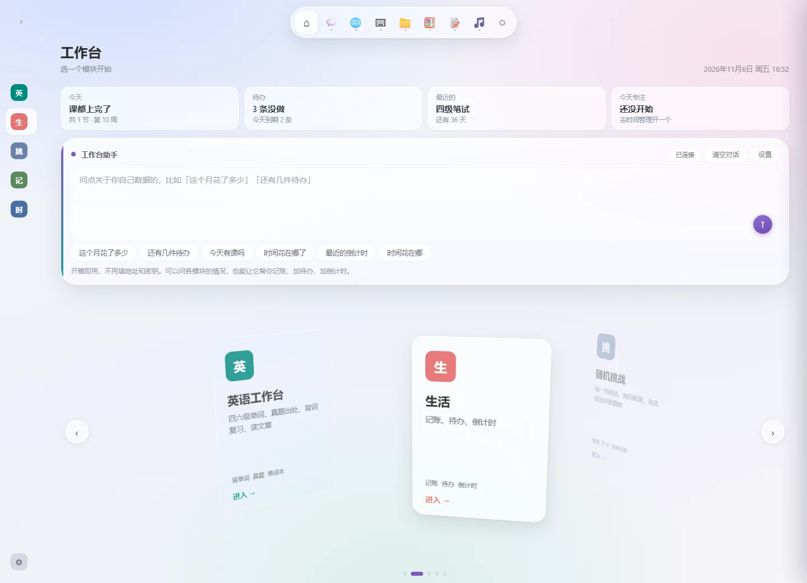
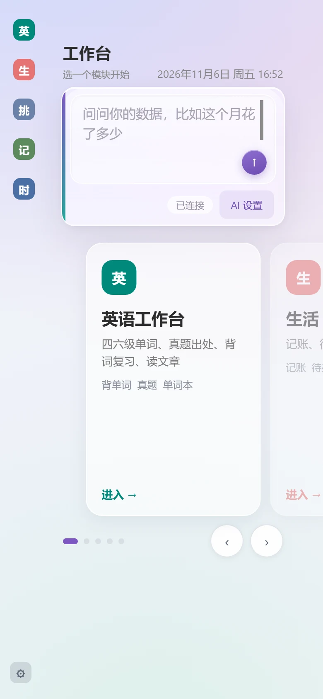
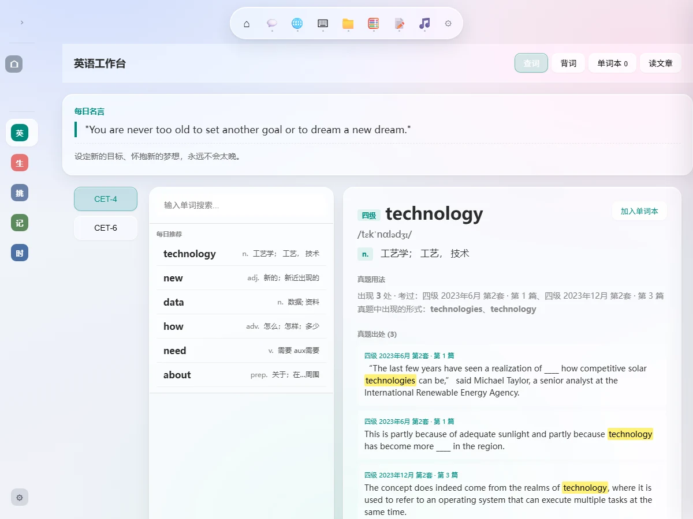
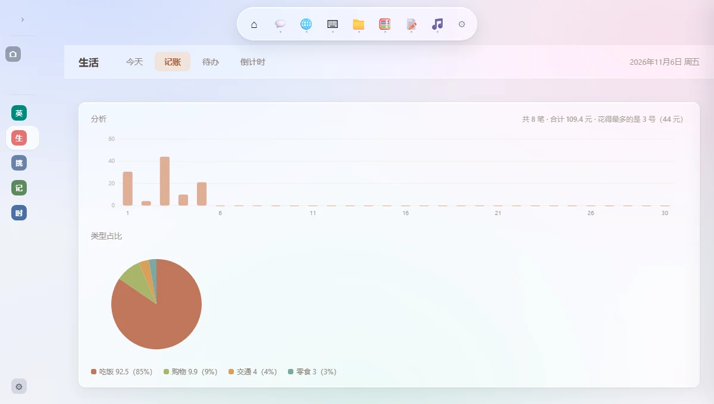
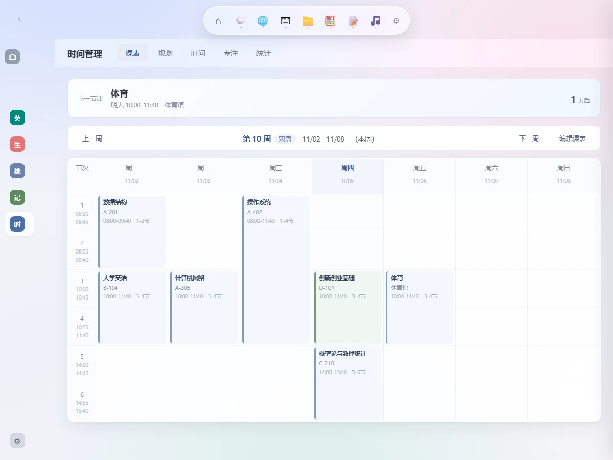
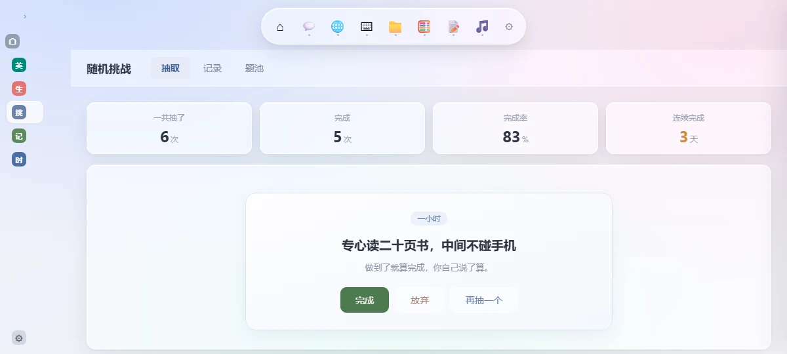
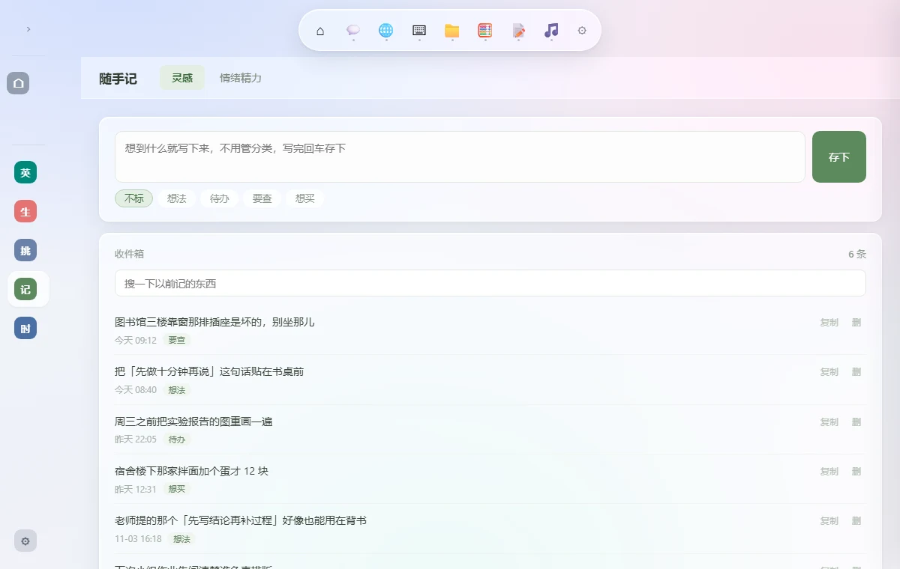
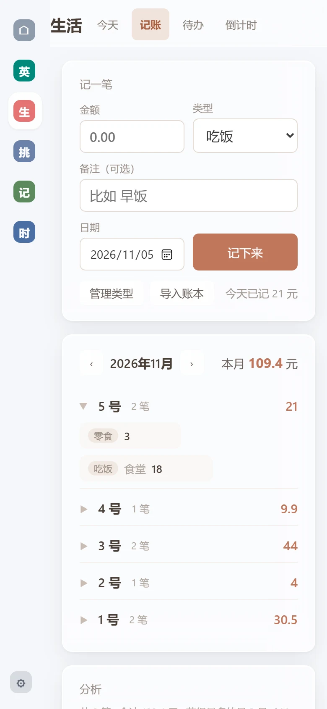

英语工作台
6662 个词、158 篇真题、卡片背词
- 每个词都标着「真题出现 N 处」和考过的套次
- 背词按间隔排复习，认得的越隔越久，不认得的回头再来
- 单词本按全部、四级、六级、顽固词筛选，能导出导入
Windows 便携版 · 免安装
桌面端和手机端都是五个模块。数据默认只存在你自己的电脑上，不注册也能用。
— · 免安装，解压即用，不写注册表


不喜欢的模块可以不用，左侧图标栏点一下就进去。
电脑和手机打开是同一份数据，换设备接着用。
6662 个词、158 篇真题、卡片背词
记账、待办、倒计时
2 号 3.8+1.5+15.6=20.9 自动拆成三笔抽到就必须做
课表、规划、时间记录、番茄钟
灵感和情绪，记一笔就走
五个模块各存各的，清空一个不会动到别的。
进去是四个页签：查词、背词、单词本、读文章。四个共用同一份词库——四级 4544 个、六级 2118 个，每个词都标着在 158 篇真题里出现过几次。
词库和真题不随开源仓库分发，仓库里只有 3 条示例数据。

英语 · 查词：右边是释义、词频，和它在真题里的原句。
四个页签：今天看总览，记账管钱，待办管要做的事，倒计时盯着还剩几天。数据是同一份，在哪一页记都一样。

生活 · 分析：上面按天看花销，下面按类型看占比。
页签：课表、规划、时间、统计，桌面版多一个专注。课表是骨架，记录往里填，统计告诉你这周还剩多少小时真是自己能支配的。

时间 · 课表：周一到周日，连堂课占两格，顶上那张卡写着下一节课。
四个时长档，从「一分钟」到「一整天」。
抽到哪道就做哪道；完成或放弃都记一笔，顶上就是完成率和连续几天。

随机挑战：顶上四个数字，下面就是手上这道题。
两个页签：灵感和情绪精力。一个收碎片，一个记状态，都是几秒钟的事，不用挑分类、不用想格式。

随手记 · 灵感：写一句就存，标记可以之后再补。
说「明天 3-4 节加一门课」，它直接写进课表；问「这个月花了多少」，它自己去翻账本。写操作先弹一条确认，你点确认才落盘。
最多连续 4 轮工具调用 · 支持联网搜索 · 后台连不上时退回本地快答
不用填 API Key。网页版和桌面版默认走站点自己的后台转发，密钥在服务器上，网页源码里看不到。想换成自己的模型，在「设置 → 助手设置」里填接口地址、密钥和模型名，只存在这台机器。
在线体验里为什么没有 AI。那份额度是作者自己掏钱买的，挂在公开页面上会被刷。装到自己机器上，连的是你自己的后台或你自己的 key。
改数据先弹一条确认，改完还能撤销；最多连续调用 4 轮，不会自己乱跑。
不建账号、不收邮箱。手机和电脑填同一组名字和访问码，看到的就是同一份数据——手机上刚记的一笔账，电脑打开也在。
%APPDATA% 里的 json，网页写进浏览器本地存储。不同步，数据就不出这台设备。手机端不是 App，是网页。浏览器打开，五个模块都在，不用装、不占存储。

手机端 · 记账：手机上记的这笔，电脑上打开也在。
下载一个压缩包，解压就能用。
不写注册表、不进开始菜单——除非你自己打开开机自启。
Release 还没发布。发布后这里会自动变成下载链接；想先看源码可以去 GitHub。
解压后双击里面的「工作台.exe」。首次运行 Windows 可能提示「未知发布者」，点「更多信息 → 仍要运行」——没有做代码签名。
https://workbench-prod-8207.netlify.app
用手机浏览器打开上面的地址就行。想放到桌面，用浏览器的「添加到主屏幕」，它本质上还是个网页。
背单词、记账、课表、番茄钟、时间记录、随手记都不联网。只有三件事会用网：AI 助手、手机电脑同步、以及查同义词（请求公开词典接口 datamuse）。
不需要。默认就在本机用，数据只写本地。想两台设备互通，才去「设置 → 数据同步」填一个名字加 4 位数字访问码——那不是注册账号，没有邮箱，也没有密码找回。
不开同步就是两份，各存各的。开了同步才按模块互通，而且不是谁覆盖谁：只有一边改过就直接同步，两边都改过会弹出来让你选。
记账、看课表、随手记、查单词都够用。差别在 AI：桌面版 39 个工具，能改能删；网页版 14 个，只能查和新增。改课、删账、勾掉待办这些得用桌面版。
桌面端存在 %APPDATA%\工作台\workbench-data.json，手机端存在浏览器本地存储。不点同步、不登录，数据就不会离开这台设备。
开了同步之后，数据会写到你自己的云端空间，按模块分成不同文件，只传改过的那几个。
里面打包了 Electron 运行时（Chromium + Node.js），这部分占绝大部分。业务代码和页面只有几 MB。
不用。它是一个网页，也不是 PWA。浏览器打开就能用，加到主屏幕只是放了个快捷方式。
删掉解压出来的那个文件夹，再删 %APPDATA%\工作台\ 这个数据文件夹。没有注册表项、没有后台服务。
MIT。源码在 GitHub 上，可以自由使用、修改、商用，保留版权声明即可。
词库和真题数据不随仓库分发——那部分版权不属于我，仓库里只放 3 条示例数据。想自己构建完整版，需要自备词库。
没有。桌面端只打包了 Windows x64，手机端是网页，任何系统的浏览器都能开。
去 GitHub 提 Issue。附上系统版本和复现步骤，比只说「用不了」有用得多。